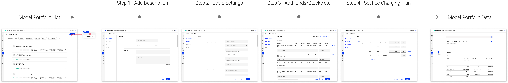
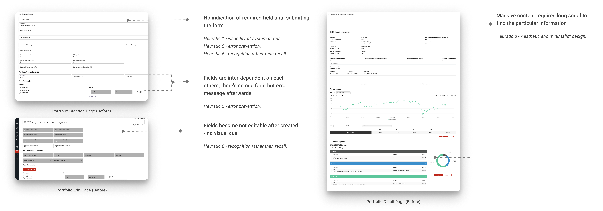
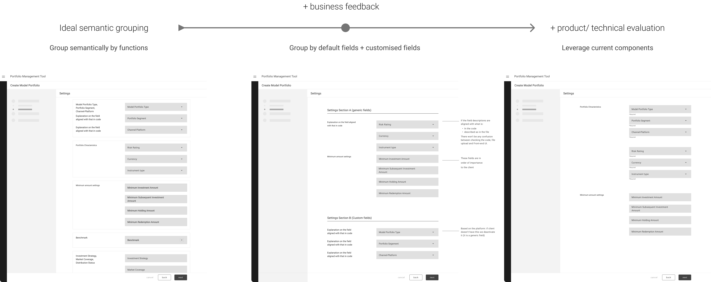
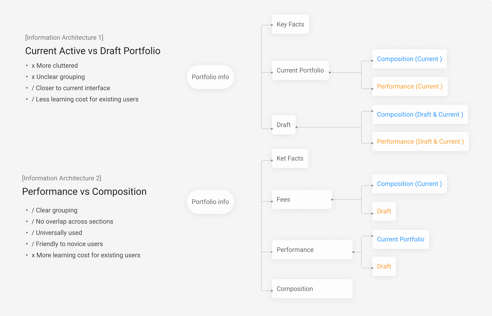

Intro
Portfolio managers use this feature to enter pre-defined model investment portfolios and later managers at banks will recomend those portfolios to clients whose risk score matches with corresponding model portfolio and who is willing to invest in the portfolio.
1. Why redesign?
Portfolio creation involves complex compliance checks and knowledges of the platform technology, it is hard to understand how fields work to create/view a portfolio with current design. Even internal staff often get confused. To better demostrate the portfolio management tool's capability to potential clients in an understandable manner, management and product team decieded overhaul the portfolio creation journey and the way the information is displayed.
2. How to identify problems without contact to users?
//Heuristic Evaluation. With limited resources for user research, I conducted a heuristic/expert evaluation by walking through the creation/view flow following the Nelson’s 10 heuristic guidelines.
3.What’re the problems?
· Lack visaibility of required input
· No error prevention
· Difficult navigation with distrations
4. Ideation - Audit, Mapping, Desktop Research
I audited the existing platforms, initiated stakehoder interviews with product owner, technical team to understand the logic and constraints and review the solution with product and fron-end team to evaluate the business value and feasibility.

5. Stratigize & Solution
Strategy 1 - Error prevention
Many fields are interlinked, it is often frustrating to know it from error summary popup at the end of creation journey. we need to explore different ways to prevent errors by making the pre-knowlege transparent
Strategy 2 - Efficient navigation, less distraction
Portfolio managers come to this page with clear target in mind, we need to make the navigation easy so they can find the information they want quickly without extra distraction
Strategy 3 - Flexible journey instead of fixed linear one
Portfolio managers come to this page for various purposes, a multi-channel navigation are needed to increaase the flexibility
Wireframes - creation
Refined design - creation

Information architecture - view page
Refined design - view page

6. Result - New client onboard after
After the overhauled creation flow deployed, clients have no compaints about it, which is not usual. Although we can hardly say all credits go to this single module redesign, but we got a new client onboard after that.>